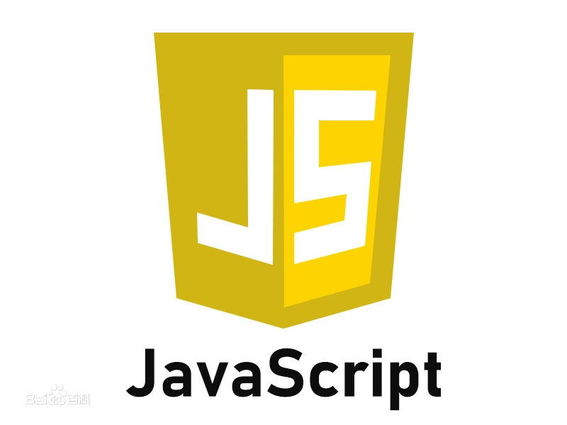

JavaScript

JavaScript（简称“JS”）是一种具有函数优先的轻量级，解释型或即时编译型的编程语言。 虽然它是作为开发Web页面的脚本语言而出名，但是它也被用到了很多非浏览器环境中， JavaScript基于原型编程、多范式的动态脚本语言， 并且支持面向对象、命令式、声明式、函数式编程范式。
发展历程
JavaScript在1995年由Netscape公司的Brendan Eich，在网景导航者浏览器上首次设计实现而成。 因为Netscape与Sun合作，Netscape管理层希望它外观看起来像Java， 因此取名为JavaScript。但实际上它的语法风格与Self及Scheme较为接近。
发展初期，JavaScript的标准并未确定，同期有Netscape的JavaScript， 微软的JScript和CEnvi的ScriptEase三足鼎立。为了互用性， Ecma国际（前身为欧洲计算机制造商协会）创建了ECMA-262标准（ECMAScript）， 两者都属于ECMAScript的实现，尽管JavaScript作为给非程序人员的脚本语言， 而非作为给程序人员的脚本语言来推广和宣传，但是JavaScript具有非常丰富的特性。 1997年，在ECMA（欧洲计算机制造商协会）的协调下，由Netscape、Sun、微软、Borland组成的工作组确定统一标准： ECMA-262。完整的JavaScript实现包含三个部分：ECMAScript，文档对象模型，浏览器对象模型。
JavaScript是甲骨文公司的注册商标。Ecma国际以JavaScript为基础制定了ECMAScript标准。 JavaScript也可以用于其他场合，如服务器端编程（Node.js）。
语言特点
- 脚本语言
- 基于对象
- 简单
- 动态性
- 跨平台性
而随着服务器的强壮，虽然程序员更喜欢运行于服务端的脚本以保证安全，但JavaScript仍然以其跨平台、容易上手等优势大行其道。 同时，有些特殊功能（如AJAX）必须依赖JavaScript在客户端进行支持。
代码示例